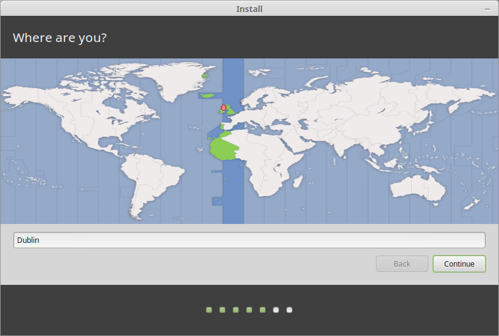

Objectives
Instructions on installing Android developer toolchain on a NUC running Linux Mint operating system including guidance on installing the Linux system on the NUC and creating a bootable live Linux memory key containing the entire toolchain.
Bootable Linux iso
Here shall describe how to create a bootable Linux memory key - a USB flash drive. The content of the key shall be a single bootable iso file. Booting this key will launch a live Linux environment that includes a facility to install Linux on a nominated device. In this step we shall install Linux onto the internal disk in the NUC using the bootable key.
We shall use a Windows machine to create the bootable key but we are not restricted to this and could also have used a Mac or Linux machine.
Using Windows has a possible advantage in that the application we shall use to create the bootable key, Rufus, is extremely efficient and easy to use. It is, unfortunately, not available for Mac or Linux. Unetbootin is an alternative tool that works on Linux, Mac and Windows.
We require the bootable key to install the Linux operating system onto the solid state drive (SDD) in the NUC. This is the first step on our journey to created the final bootable key containing an Android toolchain.
The process in this step is simple:
- Download the latest release of Linux Mint from here and save to a folder of your choosing, for example in Downloads.
- Download Rufus from here and run it. No installation is required. Just double click on the downloaded file to launch it.
- Insert a key into any of the USB ports on your computer. This particular key should be not less than about 8 GB.
- The key should appear in the Rufus window as shown in Figure 2 here.
- Ensure the key you inserted is recognized.
- Browse to the ISO image and select.
- Press Start.
When the copying has completed, safely remove the key from the USB port.
- The key is now ready for use. In the next step we shall describe how to install Linux on the NUC.
Install Linux on NUC SSD
It may be important to note that the NUC fast boot feature is disabled in the NUC used to prepare this lab.
- If the fast boot is enabled on your NUC and you are unable to boot into the key then it may be worthwhile disabling the fast boot.
- Disabling and enabling the fast boot is described here.
The NUC should be powered down before commencing.
- Insert the bootable key into a NUC USB port.
- Press the start button.
- If an existing operating system is present on the NUC press F10 to launch a boot screen.
- Select the bootable key and press return.
- If no existing operating system is present in the NUC then pressing F10 should be unnecessary.
- You may be presented with number of options. The one that should be chosen is: Start Linux Mint 17.2 Cinnamon 64-bit or something equivalent, depending on the version of Linux you are installing.
Once the live Linux system has booted, as shown in Figure 1, double click on the cdrom icon to commence the install process.
The series of screenshots below is indicative of the installation wizard screens that will be presented:


Install Oracle Java JDK
This instruction set is based on this web page.
First download Oracle JDK :
- Download from here and save to Downloads
 Create this script named installjdk in a folder - Downloads will do.
Create this script named installjdk in a folder - Downloads will do.
- This presumes we have downloaded jdk-7u79-linux-x64.tar.gz to the Dowloads folder.
- This file expands to a folder named jdk1.7.0_79. It's not necessary to do this manually - the script below takes care of that.
Filename: installjdk
#!/bin/bash
echo "Updating Linux"
sudo apt-get update
echo "Removing Open JDK"
sudo apt-get remove openjdk*
echo "Change to $HOME/Downloads"
cd ~/Downloads
echo "Extract tarball. Replace with a name of dowloaded file"
sudo tar -zxvf jdk-7u79-linux-x64.tar.gz
echo "Create a folder in /opt where jdk will be stored."
sudo mkdir -p /opt/java
echo "Move extracted folder to /opt/java"
sudo mv jdk1.7.0_79 /opt/java
echo "Make JDK system default"
sudo update-alternatives --install "/usr/bin/java" "java" "/opt/java/jdk1.7.0_79/bin/java" 1
sudo update-alternatives --set java /opt/java/jdk1.7.0_79/bin/java
echo "Test jdk installation"
java -version
From the terminal in Downloads run this command to make the script executable:
sudo chmod +x installjdk
Then run the script:
sudo ./installjdk
Type Y(es) where prompted to make a decision whether to accept a particular proposal or not during the installation.
If the script performs as intended the screen output should display java version 1.7.0_79 on or near the end of the display.
Install Android Studio
We shall install Android Studio from the command line using an unofficial Personal Package Archives (PPA).
- At the time of writing Android Studio version 1.3 installs. The latest version is 1.3.2. We will upgrade from within Studio later.
Create a script file named installandroid in the Downloads folder and add this content:
#!/bin/bash
sudo add-apt-repository ppa:ubuntu-desktop/ubuntu-make
sudo apt-get update
sudo apt-get install ubuntu-make
Still from the terminal in Downloads run this command to make the script executable:
sudo chmod +x installandroid
Then run the script:
sudo ./installandroid
You may be prompted to enter Y(es) on a number of occasions while the script runs.
Launch Android Studio and wait while Studio downloads various packages and performs further configuration.
When Android Studio intallation is completed update both Studio and Android SDK.
- If Studio is not yet visible in the menu, launch it using the file manager:
- /opt/android-studio/bin/studio.sh.
If any Android Studio or Android SDK updates are available you may download these by:
- Launching Android Studio.
- Selecting Configure in the Welcome to Android Studio screen and double clicking.
- We will also configure so that Android SDK also automatically checked for.
- Selecting Check for Update - see Figure 2.
Android Studio may not appear in the menu until after a reboot.
- To add a desktop shortcut (launcher) right click on Android Studio in the menu to open the context menu and then
- Add to panel
- Add to desktop
Code Styling
The Android Studio default configuration includes a section dealing with code styling. This refers to such features as the number of spaces used in indentation, the positioning of curly braces - for example is the opening brace inline or on the next line - and so on.
The default code styling does not really match our requirements and therefore we have provided a customized styling jar. Our customized scheme has made changes to both Java and HTML styling. The following describes how to replace the default styling with this customized version.
We begin introducing the customized styling by first accessing the Default Preferences pane, that may be opened from within Android Studio Preferences.
Import this scheme as follows:
- Ensure that the Default Preferences window is closed.
- Download customized scheme jar file and save to a temporary location.
- Select Configure as shown in Figure 6.

- Select Import Setting as shown in Figure7.

- Browse to the location where you have saved the settings jar file.
- Select the file and press Choose. See Figure 8.

- In the Select Components to Import window select only Code Style as shown in Figure 9.
- Press OK in the Restart Needed window.

This styling will now be applied to any new projects you create.
You may reformat any existing projects with this newly imported style as follows:
- In the project tool window, select module or directory to which you want to apply your reformatting.
- From the main menu, select Code | Reformat Code (or press ⌥ ⌘ L on a Mac).
- Alternatively, in the Android tool window, as shown in Figure 10, right-click the app directory and from the context menu and select Reformat Code. -In the Reformat Code dialog box accept the default settings for reformatting, as shown in Figure 11, and click Run.


Note that where embedded Google maps comprise part of a project, Google Play services must be installed.
In all cases the app's build.gradle file must be consistent with the installed platform configuration. It's quite likely that for some updates of Android Studio the build.gradle will require to be manually changed to ensure this consistency. See, for example Figures 13 and 14.
Git & SSH
Git
This step is based on information available from TecAdmint.net article: How to Install Git on Ubuntu and Linux.
This script installs git 2.5.0 at the time of writing this lab (August 27 2015).
#!/bin/bash
echo "Installing latest git from PPA"
echo "http://tecadmin.net/install-git-on-ubuntu/"
sudo add-apt-repository ppa:git-core/ppa
sudo apt-get update
sudo apt-get install git
echo "Check version installed git"
git --version
When git is first used and before a commit is made it is necessary to set the user's email. Here we are using a placeholder ictskills@wit.ie.
git config --global user.email ictskills@wit.ie
Create .bashrc file in $HOME and add these aliases:
#Git aliases pretty print logs
alias gitp="git log --pretty=format:'%C(yellow)%h %<(24)%C(red)%ad %Creset%s' --date=local --max-count=10"
alias gitpp="git log --pretty=format:'%C(yellow)%h %<(24)%C(red)%ad %Creset%s' --date=local"
#Include author
alias gitpa="git log --pretty=format:'%C(yellow)%h %<(24)%C(red)%ad %<(18)%C(green)%an %C(reset)%s' --date=local --max-count=10"
alias gitppa="git log --pretty=format:'%C(yellow)%h %<(24)%C(red)%ad %<(18)%C(green)%an %C(reset)%s' --date=local"
#Log tags
alias gitag="git log --no-walk --tags --pretty=format:' %C(yellow)%h %<(30)%Cgreen%d %Cred%ad %Creset%s' --date=local"
- gitp pretty prints logs on the last 10 commits.
- gitpp pretty prints logs of all commits.
- gitpa includes the authors' emails in the log output on the last 10 commits.
- gitppa same as gitp except prints logs on all commits.
- gitag displays logs of all tags.
SSH
The following script will install an ssh client, create a .ssh folder, copy your keys to .ssh, start the ssh agent and load the key. It will then attempt to clone a project from your BitBucket account named donation-android-2015. The script will set file permissions also. These must be correct for ssh to work properly.
For the script to work you need to :
- Generate a password-protected key pair.
- Instructions are available online here.
- Launch your Linux system.
- Create a temporary folder named, for example, ssh in your Downloads folder.
- Copy your key pair into ssh.
- Open the script installkeys and customize for your particular environment.
- This script assumes user:group is ictskills:ictskills.
- It assumes your keys are named id_ictskills_rsa and id_ictskills_rsa.pub.
- Add the public key id_ictskills_rsa.pub to your BitBucket account.
- Ensure there is a test repo in BitBucket named donation-android-2015.
- Create file named config in the folder Downloads/ssh and add the following:
Host bitbucket.org
IdentityFile $HOME/.ssh/id_ictskills_rsa
-
This file facilites addition of further key pairs to your system.
-
Open a terminal, cd to ssh and run the script installkeys
sudo ./installconfigssh
Filename: installconfigssh
#!/bin/bash
# This script requires that the keys are present in a folder named ssh which is located in the same folder as the script.
# The sample keys provided are password protected (as is necessary): password for sample keys used here is ictskills
echo "Updating and installing openssh"
sudo apt-get update
sudo apt-get install openssh-client
echo "Create $HOME/.ssh folder"
sudo mkdir $HOME/.ssh
sudo chmod 700 $HOME/.ssh
echo "Change ownership from root to user .ssh folder"
sudo chown ictskills:ictskills $HOME/.ssh
echo "Copy keys from- $HOME/Downloads/ssh to.ssh"
cd $HOME/Downloads
cp ssh/id_ictskills_rsa $HOME/.ssh
cp ssh/id_ictskills_rsa.pub $HOME/.ssh
cp ssh/config $HOME/.ssh
cd $HOME/.ssh
sudo chown ictskills:ictskills id_ictskills_rsa
sudo chown ictskills:ictskills id_ictskills_rsa.pub
sudo chown ictskills:ictskills config
echo "Setting permissions on config file and private key"
sudo chmod 600 config
sudo chmod 600 id_ictskills_rsa
sudo chmod 644 id_ictskills_rsa.pub
echo "Check presence of keys"
ls -l $HOME/.ssh
echo "Starting ssh agent"
eval "$(ssh-agent -s)"
echo "Loading key into ssh agent"
ssh-add $HOME/.ssh/id_ictskills_rsa
echo "Verifying ssh configuration"
ssh -T git@bitbucket.org
echo "Check key add to ssh"
ssh-add -l
echo "Create a repo folder and acquire ownership"
sudo mkdir $HOME/repo
sudo chown ictskills:ictskills $HOME/repo
echo "Check user:group ownership"
stat -c "%U % G" repo
echo "Cloning a sample project from BitBucket"
cd $HOME/repo
git clone git@bitbucket.org:usplitu/donation-android-2015.git
Further details on setting up keys and accessing BitBucket are available on the accompanying lab, Basic Git, in particular on steps 5 and 6.
Miscellaneous tools
Sublime Text editor
Launch the Software Manager: Menu | Administration.
Search for Sublime Text in the Software Manager.
When discovered, click the install button.
Search for Sublime Text in the menu and create launcher shortcuts on the deskop and on the panel at the foot of the screen:
- Right click to open context menu.
- Add to panel.
- Add to deskop.
Sublime Text may also be run with the terminal command subl.
Google Chrome browser

Note: Firefox is installed by default.
You may use this script to download & install Google Chrome.
#!/bin/bash
echo "Fetching Google Chrome"
sudo sh -c 'echo "deb http://dl.google.com/linux/chrome/deb/ stable main" >> /etc/apt/sources.list.d/google.list'
wget -q -O - https://dl-ssl.google.com/linux/linux_signing_key.pub | sudo apt-key add -
sudo apt-get update
echo "Installing Chrome"
sudo apt-get install google-chrome-stable
Password Manager
Password Gorilla password manager runs on Mac, Linux and Windows.
It's downloadable using the Software Manager.
System Back
This script will install System Back:
#!/bin/bash
echo "Fetching System Back and updating"
sudo add-apt-repository ppa:nemh/systemback
sudo apt-get update
echo "Installing System Back"
sudo apt-get install systemback
Clonezilla
Clonezilla facilitates creating a backup image of a disk.
Here is the Dedoimedo tutorial.
Following are the steps to create a bootable Clonezilla usb key:
-
Download Clonezilla iso from here.
- For example: clonezilla-live-2.4.2-32-amd64.iso
- Create the live Clonezilla key using Tuxboot. This is installable with the following script:
Filename: installtuxboot
#!/bin/bash
echo "Fetching Tuxboot and updating"
sudo apt-add-repository ppa:thomas.tsai/ubuntu-tuxboot
sudo apt-get update
echo "Installing and testing Tuxboot"
sudo apt-get install tuxboot
sudo tuxboot
Linux Mint 17 Menu
Editing the menu can prove very problematic. Here are some tips:
- Do not install Alacarte - a menu editor. It may introduces instability that would prove difficult to resolve.
- Instead run :
sudo cinnamon-menu-editor
Systemback
Systemback is an application that allows one to backup and restore a system.
- We describe one of its features here whereby a snapshot of the Linux install on the internal SSD in the NUC - including all its data and applications - is created and written to an iso file. The application Unetbootin is then used to add this iso file to a usb 3 key and make the key bootable. When the NUC is booted from this key a number of options are presented, one of which is to launch a live instance of the entire Linux system (including apps and data) that was captured in the snapshot.
Warning: You might consider deleting the /home/Systemback once done with Systemback session, otherwise next time you run Systemback you will be also backing up previous archive material and will quickly run out of root memory.
- Alternatively set the Storage folder to somewhere other than /home such as an external usb partition...but good luck with that should you try.
- I strongly recommend against attempting to store anywhere but at the default /home. Systemback seems to have a bug whereby if you attempt to do so then subsequent attempts to change to /home may fail, the iso is nowhere to be found, and deleting and reinstalling Systemback does not provide an easy fix.
Here are the steps:
-
Launch Systemback.
-
In Point Operations press Create new button.
- When done, press Live System Create button.
- Tick the checkbox: Include the user data files.
- Press Create New button and wait till Creating Live system completes.
-
Select newly created image in the Created Live Images panel.
-
Press Convert to ISO.
By default the ISO is located in /home.
You may also write the live image to a target usb device:
-
Insert a target USB device - key or disk.
-
Press refresh button: the target device should appear in the Write target panel as shown in Figure 2.
To create a bootable live usb key containing the restore point image:
- Download and install Unetbootin on your internal SSD Linux system (where you are currently operating) using the instructions on the download site which are assembled in this script:ß
#!/bin/bash
echo "Download and install UNetbootin"
sudo add-apt-repository ppa:gezakovacs/ppa
sudo apt-get update
sudo apt-get install extlinux
sudo apt-get install unetbootinß
-
Move the Systemback generated iso from /home to /root.
- The reason is that /root is the default location where the iso is sought when browse within the UNetbootin app. Unless you run Unetbootin as root user.
-
Run unetbootin:
- Switch to the Download folder containing the unetbootin binary.
- Make it executable: execute chmod +x unetbootin-linux64-xxx.bin
- Run it: ./unetbootin-linux64-xxx.
- Configure the UNetbootin window: an example is shown in Figure 3.
This tutorial, Systemback: Restore YourLinux System To Previous State provides more detailed information.
Dropbox
Filename: installdropbox
wget https://linux.dropbox.com/packages/ubuntu/dropbox_1.6.0_amd64.deb
sudo dpkg -i dropbox_1.6.0_amd64.deb
Edit crontab to start dropbox daemon on reboot:
crontab -e
Add:
@reboot ~/.dropbox-dist/dropboxd
You may verify crontab correctly edited:
crontab -l
Sharing Folders
The following describes how to share the Linux Download folder with computers running Mac or Windows operating systems on the same network:
- Using Software Manager install system-config-samba.
- From menu, launch Samba.
- In Samba Server Configuration window:
- Delete the printer share
- Create a user named ictskills:
- Preferences | Samba Users | Add User
- Unixuser name: ictskills
- Samba password: ictskills
- Preferences | Samba Users | Add User
- Add a share
- File | Add Share opens Create Samba Share window
- Basic:
- Directory: browse to Downloads
- Share name: Downloads
- Description: as you like it
- Tick Writable and Visible
- Access:
- Tick ictskills - the allowed user.
- Basic:
- File | Add Share opens Create Samba Share window
- The Downloads folder should be accessible for reading and writing from other machines on the network:
- login : ictskills
- pass: ictskills
Example: in a Mac Finder select menu Goto | Connect to server and provide the server address of the Linux box:
- smb://192.168.61.3 for example.
Archives
A compressed archive of the install scripts is available here